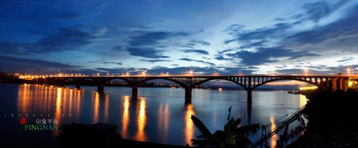
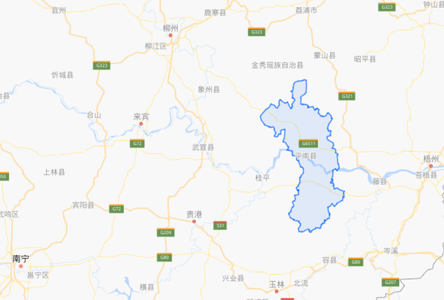

平南西江大桥
平南县西江大桥1992年元月2日12时30分胜利通车，平南西江大桥引桥与主桥全长925.26米 如今平南大桥中段出现裂口，经专家组鉴定为四类桥梁，南北往来的车辆受到严重的限制，加上桥北引桥路面的维修。相关部门采取了限重、限高、限宽措施，只允许高度小于2.5米、宽度小于2米、车货重量小于5吨的车辆通过。施工单位进场工程施工进展顺利，各种前期准备工作基本完成，其中完成场地建设10000平方米、施工便道500米×6米，配合施工的拌和站累计完成500万元。目前西江二桥进入钢栈桥及水上施工作业平台建设阶段，施工栈桥钢管桩完成20根。西江二桥项目总工程师朱觉文表示现在正在抢时间，赶在雨季（明年五月）前，把墩柱建出水面，确保在水位上升的情况能够安全施工。

平南县少数民族
主要是汉族，其他有26个少数民族。 平南彝族、白族、傣族、壮族、苗族、回族、傈僳族、拉祜族、佤族、纳西族、瑶族、藏族、景颇族、布朗族、布依族、阿昌族、哈尼族、锡伯族、普米族、蒙古族、怒族、基诺族、德昂族、水族、满族、独龙族等
